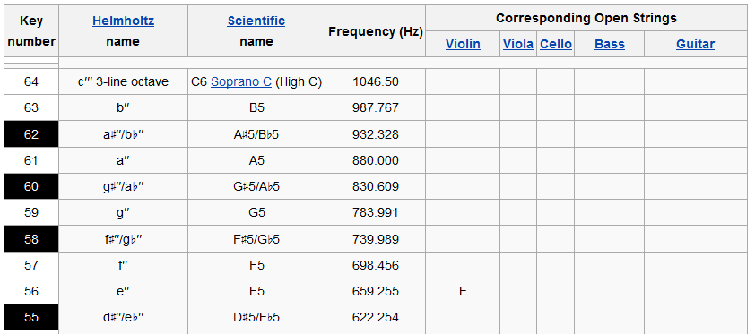

"Songifier MK2014"
IAT 455 Final Project Presentation
- Henry Lo & Kevin Choy -
Approach
- Generative audio composition
- Let anyone compose a song by speaking a microphone
- Not everyone has the money or skill to be a musician
- Users can speak, sing, or make any other vocal effects. Our application will create a unique melody composition.
*** Demo of our project ***
Technical Details
Step 1: Getting the Data
Step 2: Manipulating the Data
Once recording is complete, do post-processing.
- Group the data: when multiple consecutive frequency values are encountered, group them together and add a length:
{note: 5, freq: 34 }, {note: 6, freq: 36 }, ... {note: 63, freq: 987}, {note: 64, freq: 1046}
- This is done by comparing each frequency its key number, based on this piano note chart from Wikipedia:

Step 2: Manipulating the Data (continued)
- Regroup the notes again in case we have any new consecutive notes
- Create a music sheet
- Based on Workshop 7 code, with modifications made so that it will accept the note data format we created
Step 3: Output Synthesized Audio
- Play back the synthesized audio composition
- Also based on the Workshop 7 code
- Our ideal outputs would be both a graphic visualizer and a melody created from the input. However, based on our time contraints, we likely won't be able to achieve both.
Technical Analysis
Novel code
- Generating a melody in JavaScript based on microphone input is a new idea
- Grouping of notes
- Mapping algorithm
Performance & Optimization
- No performance issues so far
- Threads are managed properly
- Too much linear searching
Technical Issues & Challenges
- We are only able to get a short snippet of the total recorded audio, or it is bunched up together
- Unable to analyze the exact audio data being outputted
Summary
Benefits
- Creates music based on microphone data
- Audio smoothing effect based on consecutive notes
- No melody will sound exactly the same, but recording a similar input as before should also yield a result that sounds similar as before
- Fast performance
Caveats
- Time-consuming and very complex to implement
- No user-adjustable settings at the moment
- Effects have yet to be implemented
- Output sounds incorrect
- Cannot store the melody, or allow the user to download
THE END
- Henry Lo & Kevin Choy -